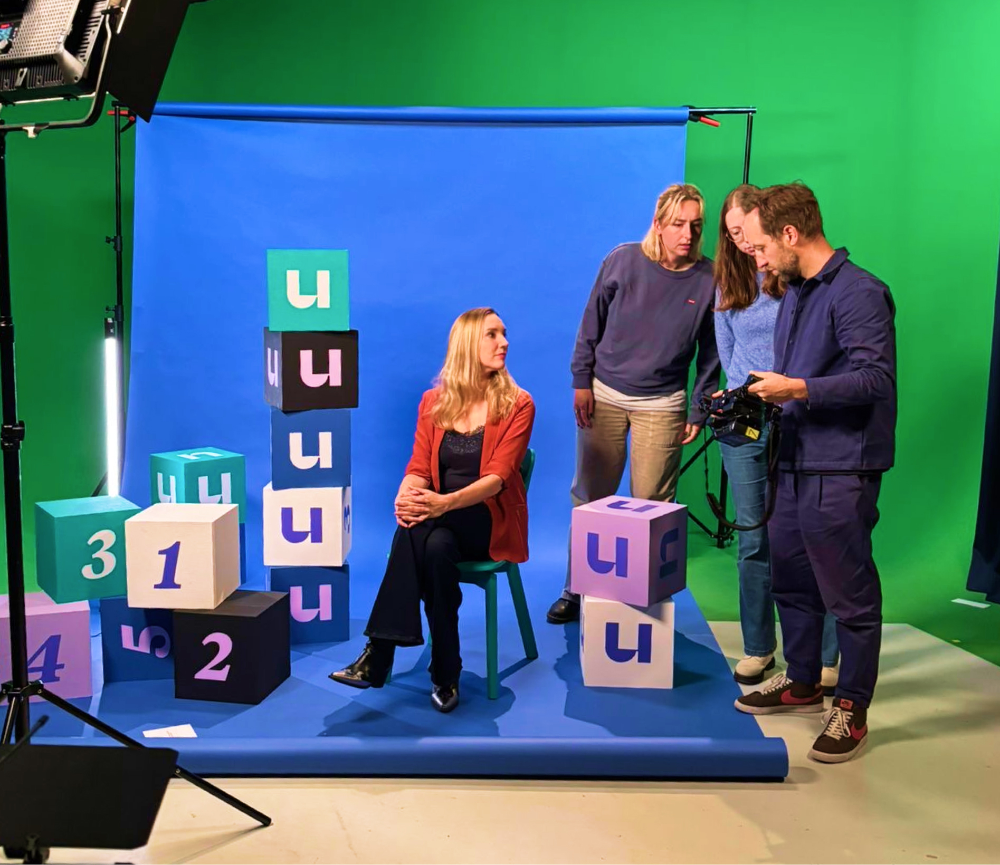
Context
HEY U is een YouTube-format voor de Universiteit van Nederland. Kijkers sturen vragen in via social media — een professor beantwoordt er vijf per aflevering. Geen academische drempel, gewoon het echte antwoord.
Probleem
De UvN had een format-idee maar niets om het mee te lanceren. Geen naam die bleef hangen, geen visuele taal die kijkers herkenden, geen productiesysteem waarmee de redactie consistent kon werken.
Inzicht
De naam en het beeld moeten het concept direct communiceren. 'HEY U' zegt tegelijk: dit is voor jou, en dit is van de Universiteit. Dat dubbelspel moest in elk onderdeel terugkomen — van logo tot thumbnail.
Oplossing
We begonnen met een uitgebreid namingtraject. Tientallen opties — van Brainsnacks tot ThinkTok — en uiteindelijk: HEY U. Daarna de complete brand identity: logo, kleurenpalet, thumbnailsysteem en production design.
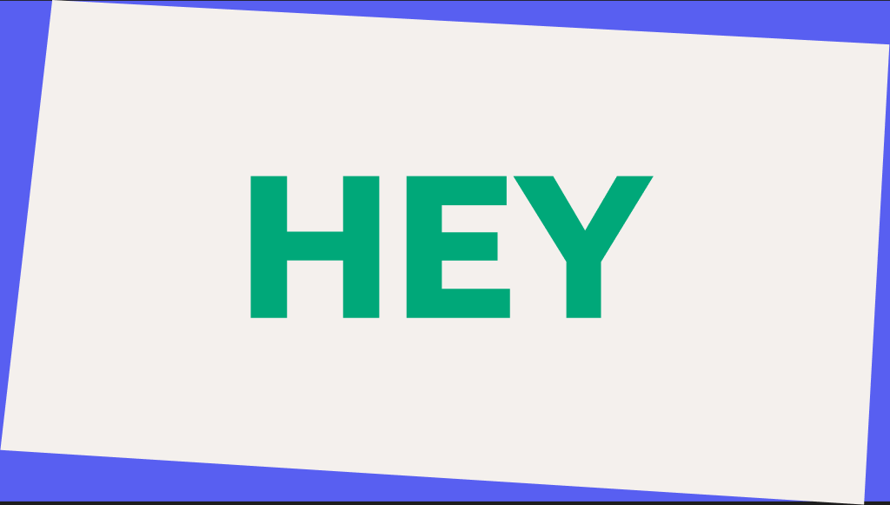
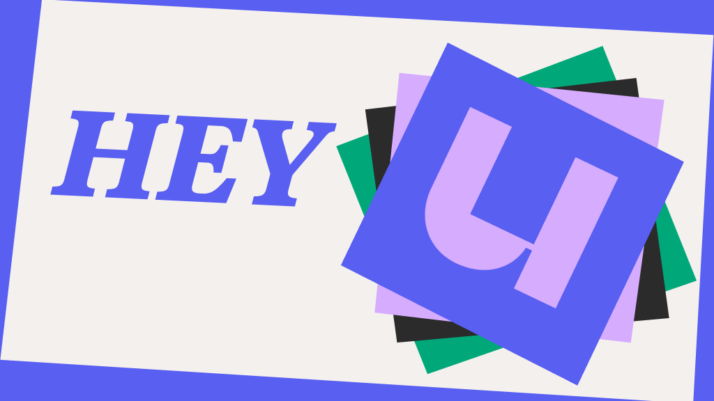
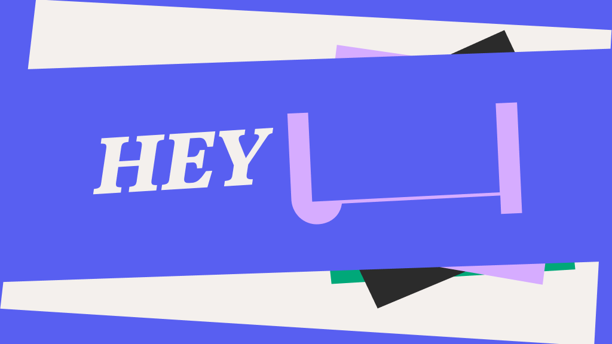
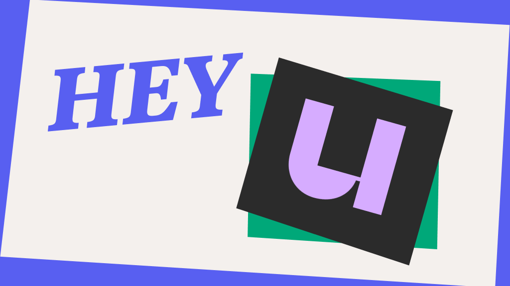
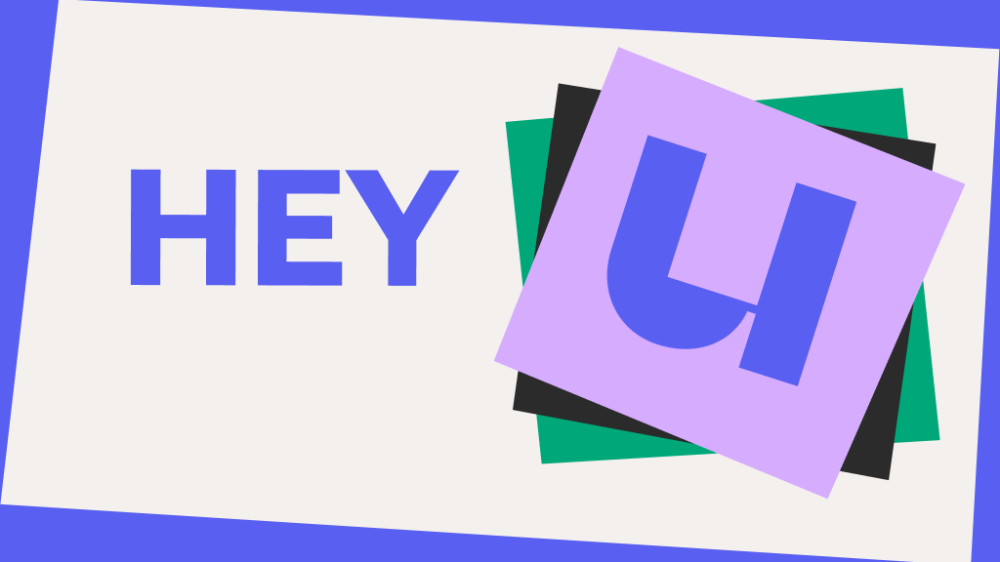
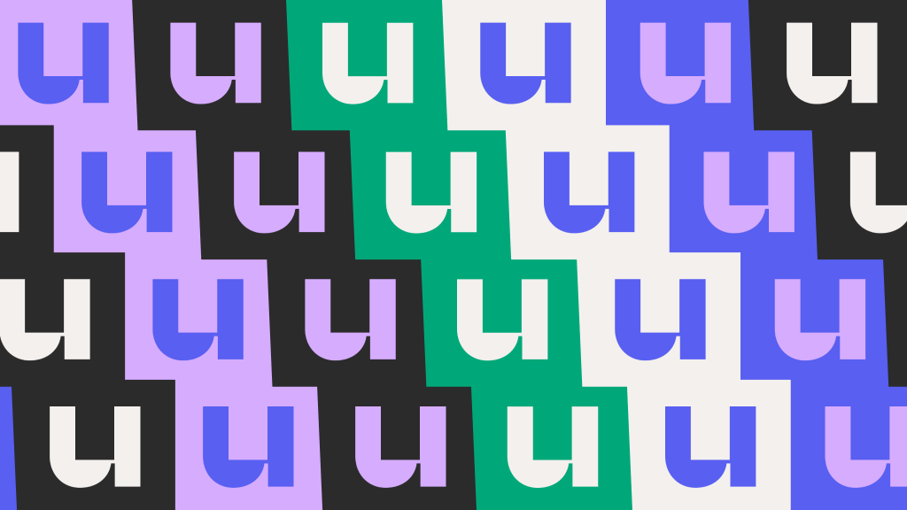
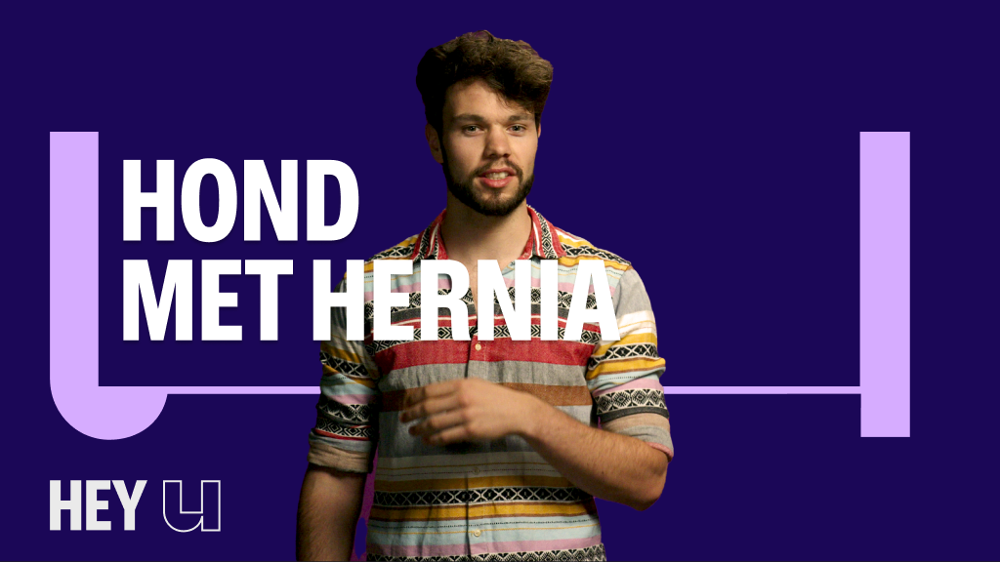
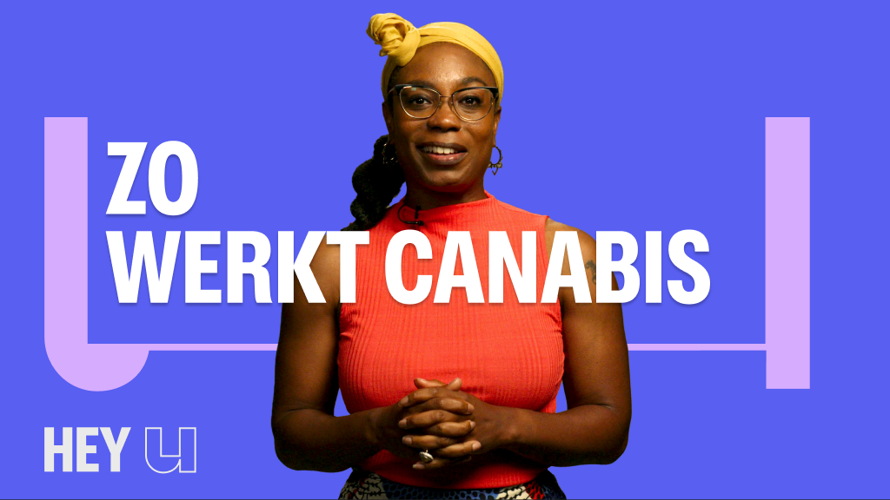
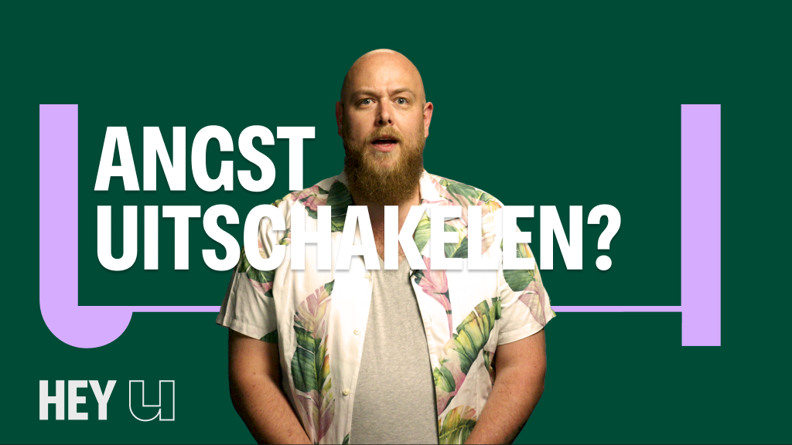
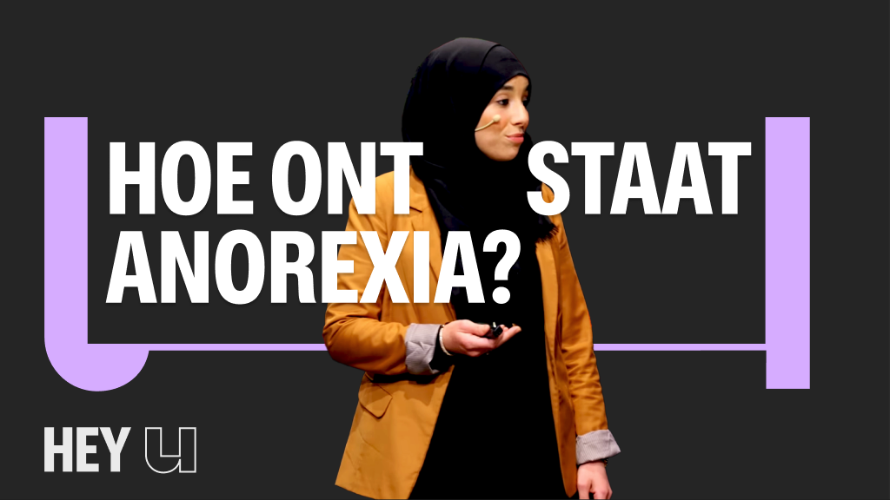
Uitwerking
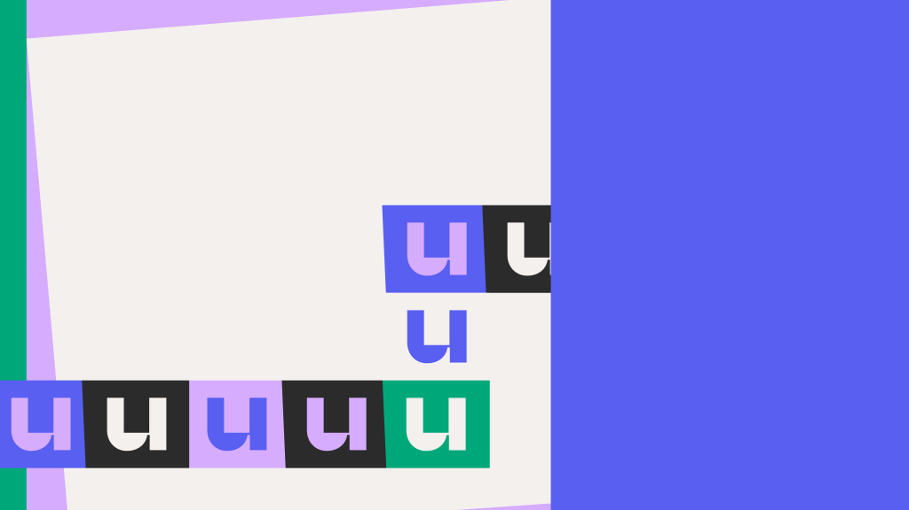
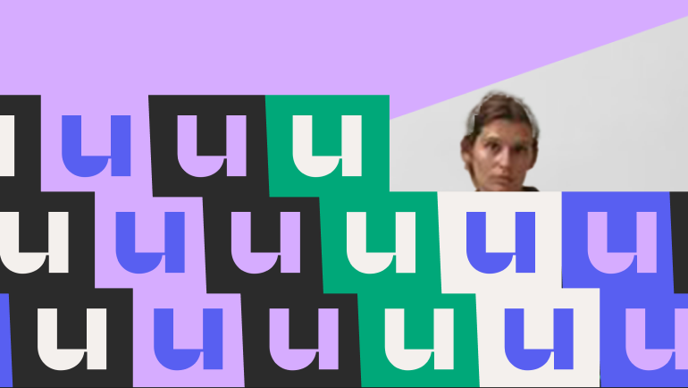

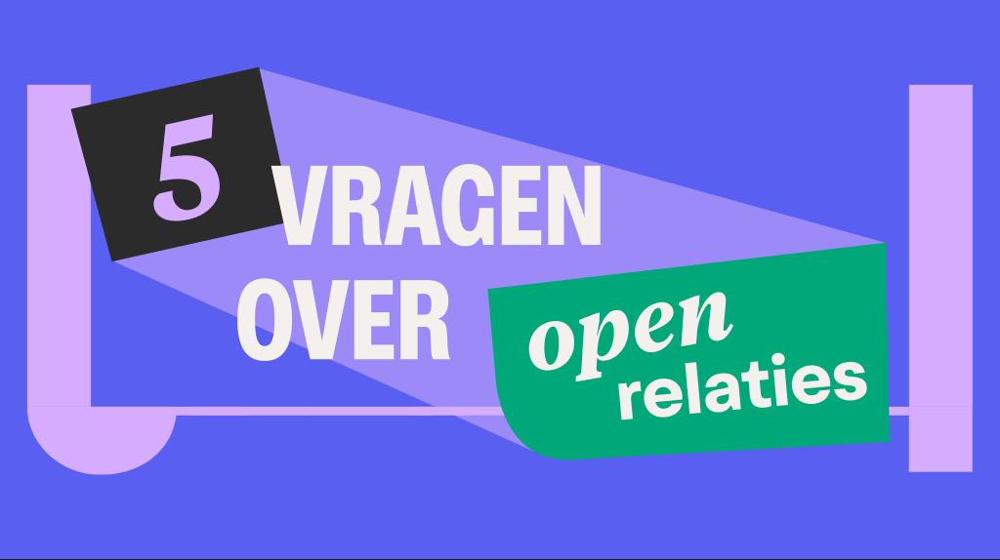
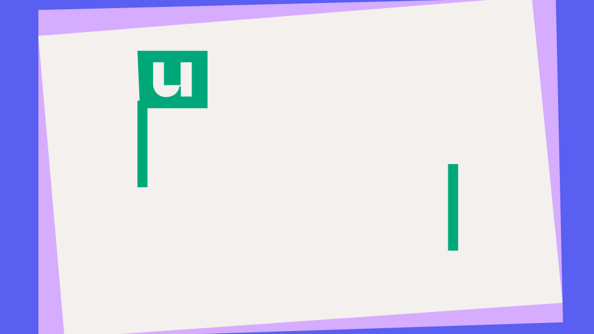
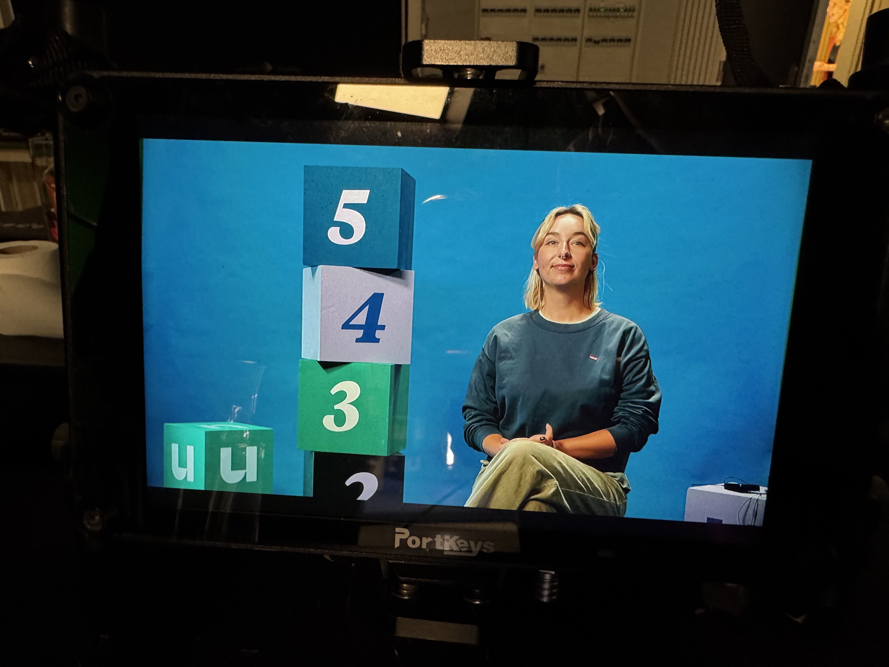
Resultaat
Het format draait doorlopend. Elke aflevering nieuwe vragen, een andere professor, hetzelfde herkenbare systeem. De redactie werkt zelfstandig verder met de templates die we hebben opgeleverd.